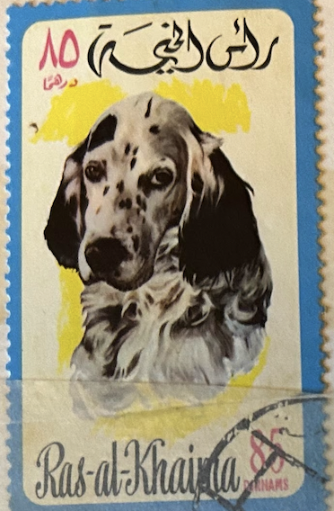
| SOURCE | TITLE| IMAGE MATCH | click to source page |
| Dreamstime.com | Stamp Printed in Ras-al-Khaimah Shows a Dog Editorial Stock Photo - Image of nature, canine: 182639233 | 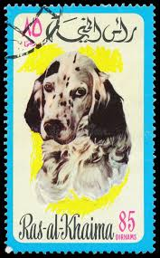 |
| eBay | A0-0 Amaran Tea, Dogs Heads, 1965, #24 English Setter | eBay | 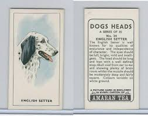 |
| Freepik | Minimalist english setter watercolor painting on white background | Premium AI-generated image | |
| eBay | English Setter Dog History New T-Shirts | eBay | 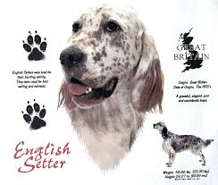 |
| Shotgun Forum | Quelque chose m'a suivi à la maison. (Fusil de gélinotte) | Page 2 | Shotgun Forum | 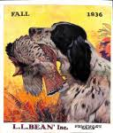 |
| Etsy | Original Vintage Hunting English Setter Pointer Dog Gundog Canine French Lithograph Wall Art Cabin Man Cave Hunter - Etsy Canada | 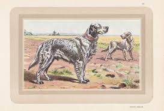 |
| Does anyone else remember this t-shirt? ~1974 | 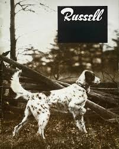 | |
| eBay | 1941 DOG CANINE ENGLISH SETTER SPORT HUNT BREEDER WAXMAN PHOTO PRINT RU65 | eBay | 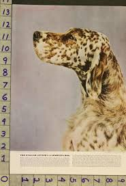 |
| eBay UK | Loose Collectable Tea Cards Cigarette Cards for sale | eBay UK | 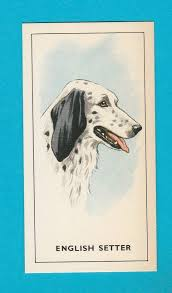 |
| Find Your Stamps Value | Value of jamestown premium value sets stamps | 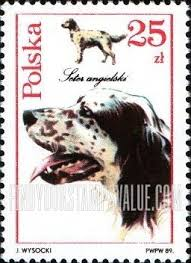 |
| Amazon.ca | High Angle View of an English Setter Walking in Grass Poster Print (24 x 36) : Amazon.ca: Home | 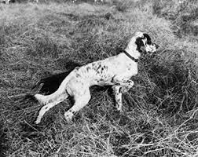 |
| Brigitte Bardot and Our Little Friends 🐶🐭🦊🐒🦁🐍🐰🐬🐐🐺🐔🙌 | 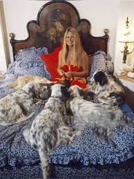 | |
| eBay | ENGLISH SETTER Vintage 1929 Arthur Wardle Dog Painting Card | eBay | 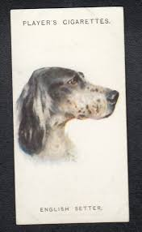 |
| Shutterstock | Sahara Occ Rasd Circa 1995 Stamp Stock Photo 94556257 | Shutterstock | 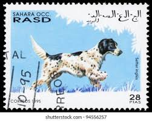 |
| eBay | G0-0 G.P. Tea, Dogs Heads, 1963, #24 English Setter | eBay | 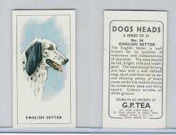 |
| eBay | Vintage 1942 Esquire Magazine Walter E. Bohl Outdoor Life Postcard Art Set #2 | eBay | 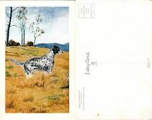 |
| MyComicShop | Argosy Part 5: Argosy Magazine (1943-1979 Popular) comic books 1948 | 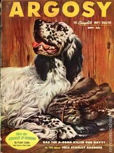 |
| Giusy Rampini | On commission portrait of an English setter awarded winner of a dog competition. | 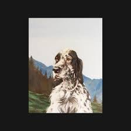 |
| eBay | 1950 Sergeant's Dog Care Products Ad - If you want to give your dog the care | eBay | 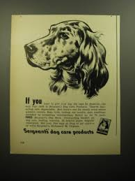 |
| PicClick | 1988 PRINT AD Purina Hi/Pro Winchester Hunting Dog Guide Shotshell Game Wheel $14.99 - PicClick | 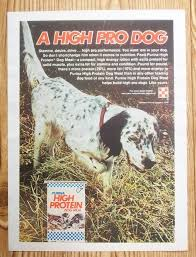 |
| Identify english setter dog in old photo? | 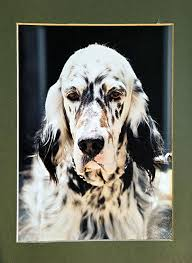 | |
| Freepik | English setteg isolated on white background generated by ai | Premium AI-generated image | |
| X | When fame still wanted more from her, she walked away. Not toward peace. But toward suffering—where no cameras followed and no applause waited. She walked into slaughterhouses others refused to see. She | |
| eBay | Postcard - English setter with slippers advert Culver Aircraft APO soldier 79 | eBay | 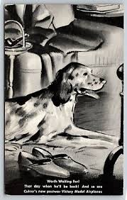 |
| Speck, A/K/A Setter Number Three : r/EnglishSetter | 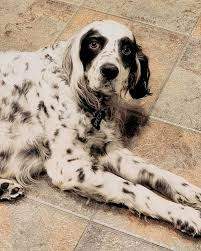 | |
| Canadian Kennel Club | JUNE 1949 | 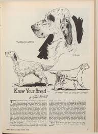 |
| MSN | Skipping breakfast isn't a personality trait – 12 breeds that suddenly go off food | |
| MyComicShop | Field and Stream (1895 Field and Stream Publishing Co.) Magazine comic books 1953-1955 | 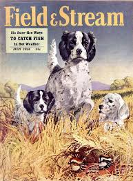 |
| Etsy | 1913 Setter Dog Antique Signed Authentic Vernon Stokes Hunting Dog Bookplate Print Unique Christmas Birthday Gift Collector's Item - Etsy Canada | 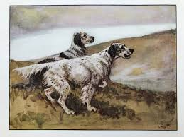 |
| Maurice Leconte (mauriceleconte) - Profile | Pinterest | 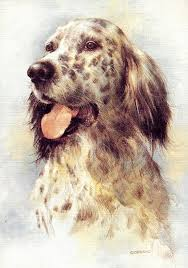 | |
| Saying Goodbye to Beloved Dog Kayah | 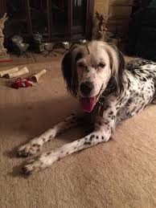 | |
| Esquire | What Makes Men Dance | Esquire | MAY 1937 | 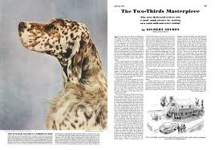 |
| First American-bred liver Best in Show winner: Ch. Green Starr's Masterpiece aka "Chips". He was bred by Dr. David and Joan Doane in 1953, and was one of the early Green-Starr breedings. | 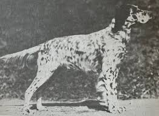 | |
| WorthPoint | 3 L.L. Bean Catalogues Fall 1954 Fall 1955 and Spring 1956 Hunting Fishing | #1797969179 | 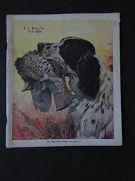 |
| AbeBooks | English Setters Ancient Modern by Margaret Barnes - AbeBooks | 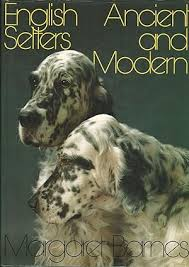 |
| eBay | Vintage 1948 Minicam Photography Magazine | eBay | 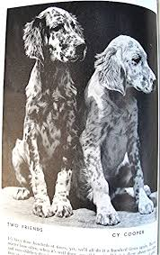 |
| As close as possible : r/EnglishSetter | 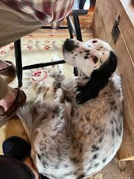 | |
| Flickr | Lucia Brunni | Flickr | 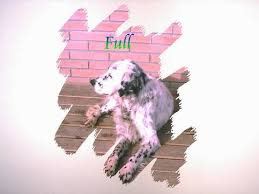 |
| Our boy's side-eye is legendary. : r/EnglishSetter | ||
| Sugar Creek Setters | Gallery | English Setters | Ryman, Pinecoble, Pinewild, & Dual Type | 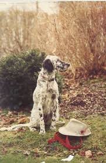 |
| 💔💔 CharlesBronson #JillIreland #HollywoodLove #ClassicCinema #TrueLove #OldHollywood #LoveStory #CinemaLegends #VintageHeart | ||
| eBay | Angus Journal | eBay | 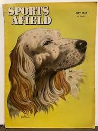 |
| eBay | 158 ENGLISH SETTER portrait dog art print * Pen and ink drawing by Jan Jellins | eBay | 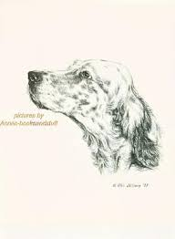 |
| Strideaway | Strideaway | » Ed Mack Farrior ~ Book Progress! | 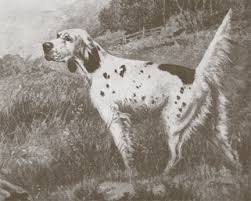 |
| DogsFiles | BILLO » Pedigree database English Setter; | 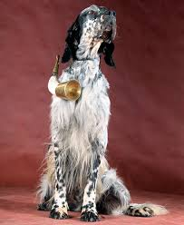 |
| eBay | 1931 Buick Straight Eight Car Ad - It's Blue Blood | eBay | 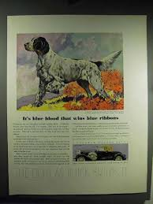 |
| Etsy | 1941 Tiny Labrador Retriever Print MINIATURE Size Black Lab Illustration Wall Art Decor Birthday Gift Idea 12406j - Etsy Canada | 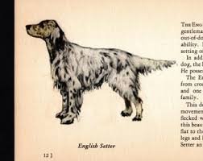 |
| eBay UK | English Setter Pup Print by Robert J. May | eBay UK | 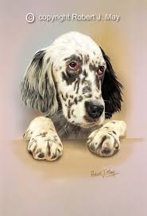 |
| Happy birthday to the Rip & Dizzy litter! 🤍 🖤 | 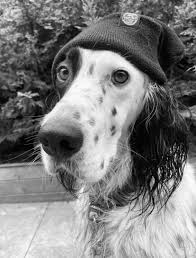 | |
| Etsy | 1935 Antique English Setter Print Diana Thorne English Setter Illustration Bird Hunting Dog Art Print Birthday Gift Idea 9337c - Etsy Denmark | 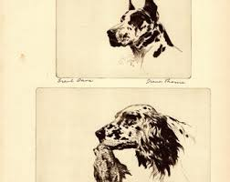 |
| Ondo State Government | English Setter Puppies By: Sally Anne Thompson From: Puppies In Color 1962 | 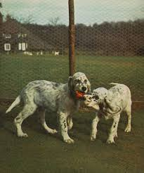 |
| Corey Ford's best friend - Cider | 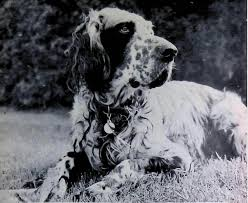 | |
| img43610.jpg - Click to see more photos on ServImg | 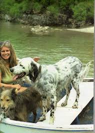 | |
| Blogger.com | Little Known Gems: Reviews and Interpretations: HOW TO LIKE IT by Stephen Dobyns and THE CRY OF THE WILD GOOSE by Frankie Laine | 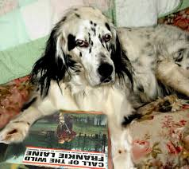 |
| good monday 🌻 brigitte bardot in the Coach and Horses Pub by ray bellisario in 1968 | ||
| Vancouver Adoptable Dogs | 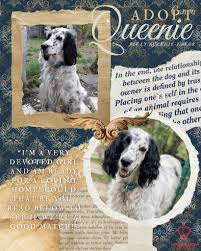 | |
| Flickr | husfrua | Flickr | |
| Art.com | Irish Setter Specialty Products Wall Art: Prints, Paintings & Posters | Art.com | |
| 13 Llewelyn setters ❤️ ideas | llewellin setter hunting dogs, llewellin setter hunting, llewellin setter |